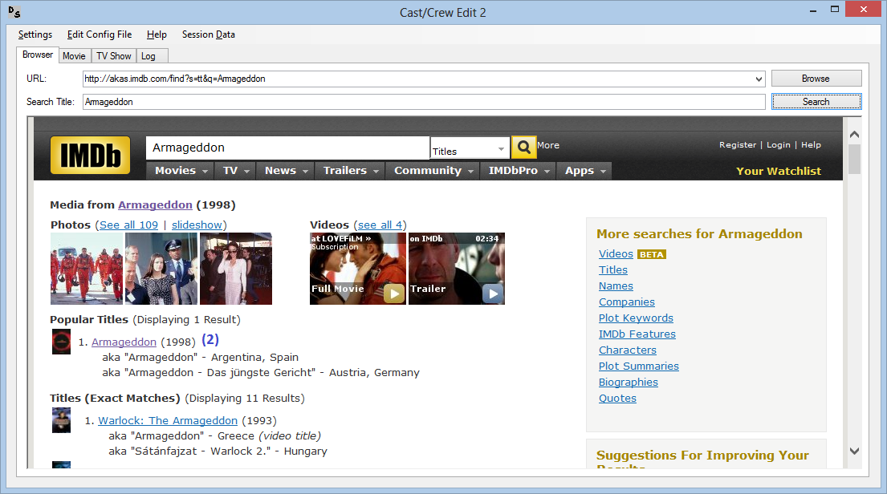
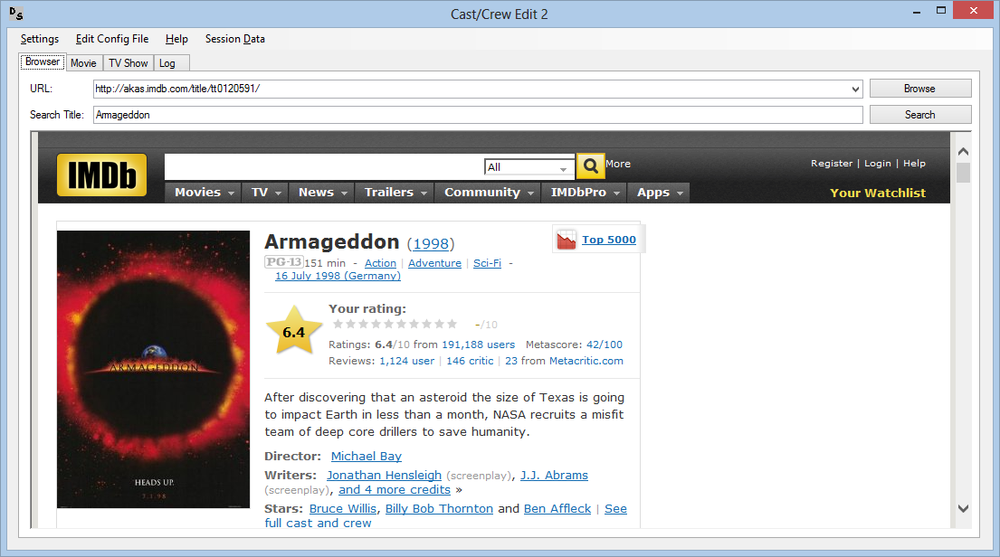
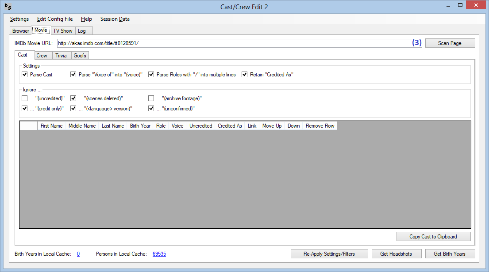

This program helps you to parse movie / TV Show sites from IMDb to use the cast, character and crew information in DVD Profiler.
Please use only the us-english version of the IMDb website (www.imdb.com), it won't work in other languages.
This program is for personal use only, commercial use of IMDb data is forbidden by IMDb and the use of IMDb data in the DVD Profiler online database is forbidden by Invelos.
You can select (click on the row header) one or more rows in the crew result grid and then delete them by pressing DEL on your keyboard.
The same applies for crew data, just use the other tab in both programs.


The same applies for crew data, just use the other tab in both programs.
The features you enable or disable in the Setting dialog will be made permanent. When you start the program these are the settings that will be set.
But you can override them on the main dialog by enabling/disabling a feature for this session.
It's not possible to get too many birth year informations at a time, the IMDb server blocks the calls after a varying number of requests.
Therefore I only get the cast list without attempting to get the birth years, too.
You have to retrieve the birth years afterwards by pressing "Get Birth Years". Even then an error might come up that says "503 Webservice unavailable". Simply try to press "Get Birth Years" again until the program tells you that the parsing is finished.
Then you can press "Copy Cast/Crew to Clipboard" as usual.
If you don't want or don't need the birth years you can also skip this entire step and simply press "Copy Cast/Crew to Clipboard" after retrieving the cast data.
In order to ensure linkability for the cast and crew the "common name" and the birth year of a person must be identical. IMDb ensures this, that's the whole reason this program exists. Still, even on IMDb a common name or the birth year can change. If that happens, all data parsed after that point are incompatible with the ones that were parsed before (e.g. birth year of "John Smith" changes from 1920 to 1921.
To find such changes, all queried persons are stored in two local files: \Data\Cast.xml and \Data\Crew.xml
It contains the parsed name and the birth year (if available). The identifier is the IMDb link. If the common name or the birth year changes, the program will inform you of this.
Since parsing the birth years is a time-consuming task, the program stores birth years in a local cache that will be cleared when the program ends. The cache is only valid during the run of the program.
But there's a new perfomance-enhancing option: You can chose to take the birth year from the above persons cache instead of parsing IMDb. The program will still parse IMDb if the birth year is not in the local person cache, but if it has already parsed this person for his/her birth year in a former run of the program, it will take it from the local cache.
Warning: If you enable this perfomance enhancement, you won't notice if the birth year on IMDb has changed.
For the purpose of these files, see Local Birth Years and Persons Cache.
DO NOT delete this file, even when you are installing a new version of this program. If you delete this file the program can't check whether common names or birth years have changed since you've started using this program. This could lead to inconsistencies in your DVD Profiler database and break the linking feature.
These files are not part of the install package.
The program comes with a number of text files that can be edited by the user to enhance the parsing process.
This file contains the mapping information from the crew roles in IMDb to the ones in DVD Profiler.
In IMDb every crew member belongs to a certain section (like "Direction" or "Art Department"). You can find these sections when you open a movie / TV Show episode in IMDb and click on the link "full cast and crew" in the left navigation bar.
The easiest way to edit IMDbToDVDProfilerCrewRoleTransformation.xml is to use the program "EditIMDbToDVDProfilerCrewRoleTransformation.exe". It will open the file and present the data in a comprehensive way. You can edit it there and then save it with the program.
Usually the first word of the name becomes the firstname and the rest will be parsed into middlename and lastname. But
there are circumstances where the first word is only part of the firstname, for example if it is a royal or a military
title ("Dame", "Capt.").
You can edit the file and add additional firstname prefixes there (only one word per line though).
Usually the last word of the name becomes the lastname and the rest will be parsed into firstname and middlename. But
there are circumstances where a word before the lastname is part of the lastname, for example if it is a dashless
lastname or a royal prefix ("de la", "van", "Bonham" as in "Bonham Carter").
You can edit the file and add additional lastname prefixes there (only one word per line though).
Usually the last word of the name becomes the lastname and the rest will be parsed into firstname and middlename. But
there are circumstances where the last word is only part of the lastname, for example if it is a military
title or an inherited name ("USMC", "III", "Jr.").
You can edit the file and add additional lastname suffixes there (only one word per line though).
This file has become obsolete since 1.8.0.0.
This file is optional, thus it won't be delivered with Cast / Crew Edit 2.
It is created as soon at it's needed.
Sie wird erstellt, sobal sie benötigt wird.
If you want "Custom" crew, you still might not want "Custom" crew from all IMDb Categories.
These are listed here (e.g. "Music Department").
You can edit the file and add (additional) IMDb Categories there (one per line).
This file is optional, thus it won't be delivered with Cast / Crew Edit 2.
It is created as soon at it's needed.
If you want to have "Other" crew, you still might not want all IMDb Categories.
These are listed here (e.g. "Transportation Department").
You can edit the file and add (additional) IMDb Categories there (one per line).
In this file names are stored that require special parsing. They can be stage names (e.g. "Meat Loaf"), or
people with complex last names (e.g. "Helena Bonham Carter", where "Bonham Carter" is the last name).
Every line has to contain three semicolons (";"). The divison is as follows:
<Complete IMDb Name>;<First Name>;<Middle Name>;<Last Name>
You can edit the file and add additional names there (one name per line).
In this file IMDb IDs are stored for which a manual birth year is determined.
It can be used to seperate people with the same names and birth years, or to re-unite identical people that have two different IMDb IDs.
An entry in this list overrides any other Birth Year setting.
Every line has to contain one semicolon (";"). The divison is as follows:
<IMDb-ID>;<Fake Birth Year (between 1 and 65535)>
You can edit the file and add additional IDs there (one ID per line).
The file \Data\CastCrewEdit2Settings.xml contains the settings you have set in the Settings Dialog.
This file is not part of the install package.
If you start the program with the parameter /skipversioncheck then it won't check if a new version is available for download.
The program has english and german UI texts. If your Windows is set to a german UI, the program will present itself in german. If it's in english or any other language, it will present itself in english. If you wish to override that behaviour, add the startup parameter /lang=de or /lang=en.
If you start CastCrewEdit2.exe with this /browser switch, it will use a different browser control for you to find the title you're looking for.
/browser=ie6uses the old Internet Explorer 6 browser, IMDb will look crappy but still usable for CCE2's needs
/browser=webviewnew default browser, based on Microsoft Edge
/browser=webviewcompatiblenew default browser with backwards compatibility
/browser=webview2experimental new version, based on Chromium
Light Cyan: Contains the title of the movie / TV Show.
Light Blue: Contains the divider for the TV Show episode.
Light Green: If you have checked the box "Parse Roles with '/' into multiple lines" and the program splits such a credit into several rows, the additional rows become light green for faster recognition.
My personal handle on this issue is that a credit will be split if the actor actually plays different people (for example Michael J. Fox played in "Back to the Future: Part III" the characters "Marty McFly" and "Seamus McFly") but not if it is the same person (for example "Bruce Wayne / Batman").
Simply double-click on the cell you wish to edit. The data you change will remain, unless you re-scan or re-parse the IMDb page.
Title Row: You can edit the Last Name and thus the title of the movie / TV Show.
Divider Row: You can edit the Middle Name and thus the episode number and the Last Name and thus the episode name.
Cast Row: You can edit Role, Voice, Uncredited and Credited As.
Crew Row: You can edit Category, Role, Custom Role and Credited As.
Up / Down Button: By pressing up or down on a cast line this line will be moved
in that direction, thus allowing re-ordering of cast without outside help.
When you press it on a divider, you will
move an entire episode and it's cast/crew up/down.
Remove Row Button: Removes the row.
If you press the "Get Headshots" button all available Headshots for cast and crew are downloaded and copied to \Images\DVD Profiler. From there you can copy them to the CreditPhotos folder in your <My Documents>\DVD Profiler folder.
You can also activate the option to copy them automatically in the CreditPhotos folder of DVD Profiler.
If you enable the option to download trivia for a movie, you can use this in combination with the Movie Trivia for HTML Window.
When the Cast or Crew table is selected it is now possible to copy the data to the clipboard by pressing CTRL-C.
If the DVD Profiler plugin Cast/Crew Copy&Paste (version 1.1.0.0 and higher) is installed, you now have the option to send the data directly to DVD Profiler.
You need to enable this option on both sides, for one in the DVD Profiler menu Tools and for the other here under Settings>Other.
When the Cast or Crew table is selected you can activate the transmission by pressing CTRL-S
It's highly unlikely that this program will do any damage to your computer. But you are still running it at your own risk, I can't be held accountable for any damage it causes.
Should the program behave erratically on startup, try to delete the following file: \Data\CastCrewEdit2Settings.xml
You can find this program and other DVD Profiler related programs under http://doena-journal.net/en/dvd-profiler-tools
On my home page you can find a program with which you can edit cast/crew data further. Or the DVD Profiler cast/crew data in general.
Warning: If you change the names or birth years there, the consitency of the data cannot be ensured anymore.
/browser=ie6uses the old Internet Explorer 6 browser, IMDb will look crappy but still usable for CCE2's needs
/browser=webviewnew default browser, based on Microsoft Edge
/browser=webviewcompatiblenew default browser with backwards compatibility
/browser=webview2experimental new version, based on Chromium
These people are considered identical by IMDb. Any call to the first person will lead to the second person. Please adapt your DVD Profiler data accordingly.
nm0742789: Laurence Todd Rosenthal (42789)
nm0742787: Laurence Todd Rosenthal (42787) (Star Trek: Voyager (TV Series 1995–2001) - Episodes - IMDb)
These people are considered identical by IMDb. Any call to the first person will lead to the second person. But since the data is identical by DVD Profiler's standards, nothing needs to be done.
nm0604747: Jeffrey Dean Morgan (1966) (Red Dawn (2012), P.S. Ich Liebe Dich (2007), O.C., California (2003–2007) - Episodes - IMDb)
nm0604742: Jeffrey Dean Morgan (1966) (Star Trek: Enterprise (TV Series 2001–2005) - Episodes - IMDb, Grey's Anatomy (TV Series 2005– ) - Episodes - IMDb)
This person has gotten a new link which did not yet exist in your cache: nm0289255. Nothing needs to be done.
nm0289256: Melodee Spevack (1953)
This person could not be resolved due to the follwing error.
nm1638131: Krishnar (1982)
The remote server returned an error: (404) Not Found.
This person has gotten a new link which did not yet exist in your cache: nm2180757. Nothing needs to be done.
nm5272213: Dennis Adkins (2213) (Leverage (TV Series 2008– ) - Episodes - IMDb)
These people are considered identical by IMDb. Any call to the first person will lead to the second person. Please adapt your DVD Profiler data accordingly.
nm5275684: Dennis Adkins (5684) (Leverage (TV Series 2008– ) - Episodes - IMDb)
nm2180757: Dennis Adkins (2213) (Leverage (TV Series 2008– ) - Episodes - IMDb)

WARNING: Do NOT run "Check for Duplicates in Cast/Crew Edit 2 Cache" and "Cast/Crew Edit 2" at the
same time.
DVD Profiler can distinguish people only by four criteria:
Last Name
First Name
Middle Name
Birth Year
If these four things are all IDentical DVD Profiler cannot tell these two people apart.
"Check for Duplicates in Cast/Crew Edit 2 Cache" helps you to find such possible collsions.
In the tab "Everything IDentical" you see all the entries that could be such mismatches.
"Could" because of the introduction of fake birth years, derived from the IMDb ID of the
actors/actresses.
The comparison if two actors possibly clash is done under the exclusion of the fake birth year and
only looks at the "real" data.
But IMDb is not perfect either. Sometimes they create a new actor page for an actor that already
exists.
When they notice their mistake, one of the IDs is forwarded to the other, pretty much transparent to
the user (only visible in the URL of the website).
By the time IMDb notices their mistake, you might already have both IDs in your local cache.
Until now this wasn't a problem because of DVD Profiler's concept. It simply merged these two entries
again.
With the introduction of fake birth years it might happen that this one person is actually
consIDered two different people in your local database.
Here's an example: The actor Benjamin Hoffman was listed under the IDs nm2200880 and nm1887263 in
my local database, but both IDs led to the latter one, see: http://www.imdb.com/name/nm2200880/
To find these possibly IDentical people, switch to the "Everything IDentical" tab and check if
the pairs are actually only one person. If so, simply remove the outdated ID.
If this outdated ID already has a fake birth year assigned you should check your DVD Profiler
database and merge the actors there, too.
Another interesting case was Elizabeth Rodriguez whom I had as nm1879985 and nm3318694 but both
IDs led to nm0735300 which I hadn't.
So I saved and closed "Check for Duplicates in Cast/Crew Edit 2 Cache", opened "Cast/Crew Edit 2"
and scanned one of her works that has few cast in it (for time-saving purposes), in her case
"Beadhead" http://www.imdb.com/title/tt0165634/
Now I had three IDs of hers in my cache and could savely remove the two outdated ones.
End of Development: v1.2.4.5 is the last version of Cast Edit 2. Please upgrade to Cast/Crew Edit 2, which can also be found under http://doena-soft.de/dvdprofiler/index_en.php == Version 1.2.4.5 == Minor Bugfix regarding exlusion of uncredited cast. == Version 1.2.4.4 == IMDb has once again changed their HTML code. I tried to optimze my Regular Expressions so that it is more lenient. Hope that helps. == Version 1.2.4.3 == Sorry for so many versions in such a short time, but this time IMDb has changed somtehing again and I had to adapt. == Version 1.2.4.2 == Error when copying to clipboard. == Version 1.2.4.1 == Minor parsing bug in character names. Error when copying to clipboard. == Version 1.2.4.0 == Code Optimization and adaptions to IMDb's recent changes. Use command line parameter "/skipversioncheck" to skip version check on startup. Reorganized the Help menues. == Version 1.2.3.1 == Check, whether or not the readme.txt is actually there. == Version 1.2.3.0 == IMDb has adapted it's HTML code and I had to react. == Version 1.2.2.0 == I've created an additional file that stores all actor info you've retrieved from IMDb. This way I can check whether a common name or a birth year has changed when you scan the same actor at a later time. The program will then give you a warning, that you should check your actor list in DVD Profiler. You can also use my program "Find Name Duplicates" to check your database. Additionally I created a check on startup, if a new version is available. == Version 1.2.1.0 == It's no longer possible to get too many birth year informations at a time, the IMDb server blocks the calls after a varying number of requests. Therefore I only get the cast list without attempting to get the birth years, too. You have to retrieve the birth years afterwards by pressing "Get Birth Years". Even then an error might come up that says "503 Webservice unavailable". Simply try to press "Get Birth Years" again until the program tells you that the parsing is finished. Then you can press "Generate" as usual. If you don't want or don't need the birth years you can also skip this entire step and simply press "Generate" after retrieving the cast data.
End of Development: v1.0.0.0 is the last version of Crew Edit 2. Please upgrade
to Cast/Crew Edit 2, which can also be found under
http://doena-soft.de/dvdprofiler/index_en.php
== Version 1.0.0.0 ==
Upgraded version number to final v1.0.0.0
== Version 0.3.1.4 ==
Enhanced parsing on job names.
== Version 0.3.1.3 ==
Error when copying to clipboard.
== Version 0.3.1.2 ==
Minor parsing bug in job names.
Added "written for the screen" and "written for the screen by" -> "Screenwriter"
== Version 0.3.1.1 ==
Reorganized the Help menues.
== Version 0.3.1.0 ==
new setting "Capitalize CustomName"
Use command line parameter "/skipversioncheck" to skip version check on startup.
== Version 0.3.0.2 ==
added story->Story by and characters->Original Characters by to list
== Version 0.3.0.1 ==
bugfixes in EditIMDbToDVDProfilerCrewRoleTransformation.exe -> Version 0.1.1.0
== Version 0.3.0.0 ==
CheckBoxes for the CreditTypes to choose/not choose them.
Also added EditIMDbToDVDProfilerCrewRoleTransformation.exe for comfortable
editing of IMDbToDVDProfilerCrewRoleTransformation.xml
== Version 0.2.1.0 ==
Changed CreditType and CreditSubtype to DropDowns, now they are changable.
== Version 0.2.0.0 ==
New features added
retain original credit: if checked, that the custom role will be filled with the
credit from IMDb even if a match to a DVD Profiler has
been found
include credit type prefix: if checked, credits that fall under the CreditType
Other/Custom will get a prefix of the IMDb
CreditType
== Version 0.1.0.1 ==
If it is a Other/Custom credit without any description I take the IMDb
CreditType name
== Version 0.1.0.0 ==
First draft of the program. Please report all bugs you encounter.
Please note, that it is necessary to "map" the IMDb crew roles to the
DVD Profiler crew roles. For this you have to edit the file
"IMDbToDVDProfilerCrewRoleTransformation.xml". You find all valid combinations
for DVD Profiler in the sample file "AllDVDProfilerCrewRoles.xml".
It's no longer possible to get too many birth year informations at a time, the
IMDb server blocks the calls after a varying number of requests.
Therefore I only get the cast list without attempting to get the birth years,
too.
You have to retrieve the birth years afterwards by pressing "Get Birth Years".
Even then an error might come up that says "503 Webservice unavailable". Simply
try to press "Get Birth Years" again until the program tells you that the
parsing is finished.
Then you can press "Generate" as usual.
If you don't want or don't need the birth years you can also skip this entire
step and simply press "Generate" after retrieving the cast data.
End of Development: v1.0.0.0 is the last version of Cast/Crew Edit 2 For TV Shows. Please upgrade to Cast/Crew Edit 2, which can also be found under http://doena-soft.de/dvdprofiler/index_en.php == Version 1.0.0.0 == Upgraded version number to final v1.0.0.0 == Version 0.8.3.0 == New Transformation data (novel, book, short story -> Original Material By). Enhanced parsing of voice cast. Enhanced parsing of birth years (see new chapter "Local Birth Years and Persons Cache" above). == Version 0.8.2.0 == Added addional checks for the case that someone runs the exe in a different working directory. Cosmetic enhancements. == Version 0.8.1.1 == Minor cosmetic bugfixes. == Version 0.8.1.0 == Added a lot of documentation (see above). Added a new name parsing feature: In addition to define known lastname suffixes like "Jr." or "III" and known lastname prefixes like "de la" or "van" you can now also define known firstname prefixes like "Dame" or "Capt.". Added a little indicator of how many cast/crew members and their birth years are stored in the local cache. == Version 0.8.0.0 == First draft. Cast/Crew Edit 2 is based upon Cast Edit 2 For TV Shows v1.2.5.0.
End of Development: v1.2.5.1 is the last version of Cast Edit 2 For TV Shows. Please upgrade to Cast/Crew Edit 2 For TV Shows, which can also be found under http://doena-soft.de/dvdprofiler/index_en.php. == Version 1.2.5.1 == Final version. == Version 1.2.5.0 == It is now possible to change parsing settings on the Cast Screen to and re-scan the episodes with these settings. == Version 1.2.4.4 == IMDb has once again changed their HTML code. I tried to optimze my Regular Expressions so that it is more lenient. Hope that helps. == Version 1.2.4.3 == Sorry for so many versions in such a short time, but this time IMDb has changed somtehing again and I had to adapt. == Version 1.2.4.2 == Error when copying to clipboard. == Version 1.2.4.1 == Minor parsing bug in character names. Error when copying to clipboard. == Version 1.2.4.0 == Code Optimization and adaptions to IMDb's recent changes. Use command line parameter "/skipversioncheck" to skip version check on startup. Reorganized the Help menues. == Version 1.2.3.1 == Check, whether or not the readme.txt is actually there. == Version 1.2.3.0 == IMDb has adapted it's HTML code and I had to react. == Version 1.2.2.0 == I've created an additional file that stores all actor info you've retrieved from IMDb. This way I can check whether a common name or a birth year has changed when you scan the same actor at a later time. The program will then give you a warning, that you should check your actor list in DVD Profiler. You can also use my program "Find Name Duplicates" to check your database. Additionally I created a check on startup, if a new version is available. == Version 1.2.1.0 == It's no longer possible to get too many birth year informations at a time, the IMDb server blocks the calls after a varying number of requests. Therefore I only get the cast list without attempting to get the birth years, too. You have to retrieve the birth years afterwards by pressing "Get Birth Years". Even then an error might come up that says "503 Webservice unavailable". Simply try to press "Get Birth Years" again until the program tells you that the parsing is finished. Then you can press "Generate" as usual. If you don't want or don't need the birth years you can also skip this entire step and simply press "Generate" after retrieving the cast data.